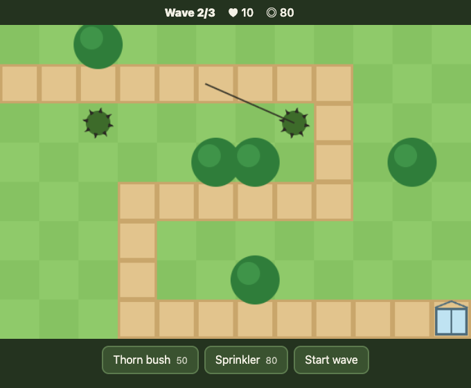

AI in the SDLC / Session 2 of 2
From one agent
to the bleeding edge
Eras 5 to 8: from mid-2025 to October 2026.
Last time
The theory, in eight lines. Today: how to use it.
Era 1An LLM is a function of its input, and stateless on its own
Era 1Tokens are the unit of cost and context, and differ by provider
Era 1Training: imitate, then sharpen, then reward
Era 1A chat re-sends the whole conversation every turn
Era 2Function calling: the model writes the call, the server runs it
Era 2More context, thinner attention. Curate it.
Era 3The harness: tools on our machine, a loop, memory, a gate, MCP, skills
Era 4Claude Code is that harness: a loop that checks its work with tests
Your knowledge is already stale
Most of a 2025 CLAUDE.md is now wrong or noise
❯ /doctor prompt-audit
Shipped Sep 2026: flags prompting patterns “written for older models”.
# CLAUDE.md (written in 2025)
See docs/setup.md for the build.path no longer exists
Use # to save memories.removed command
Always run the full test suite.contradicts AGENTS.md
YOU MUST NEVER SKIP TESTS!!!shouting, written for older models
Money is integer cents.kept: not obvious
Era 4 · The terminal agent / Memory
CLAUDE.md: only what isn’t obvious
It is added to every request, so every line costs context. If Claude would find it in a minute, delete it.
Same idea, any agent: AGENTS.md (Aug 2025).
# CLAUDE.md
This is a TypeScript project.
Use good variable names.
Tests live in tests/.
Run tests with `pnpm test:unit`; `pnpm test` hits prod.
Never edit src/gen/: it is generated from schema/.
Money is integer cents. No floats, ever.
Write clean code.
Era 4 · The terminal agent / Skills
Skills: instructions that load only when a task needs them
Era 4 · The terminal agent / Skills in practice
Skills in practice: the description is the trigger
A skill is a folder with a SKILL.md. Until a task matches, Claude reads only its description.
So write the description like a search query: when to use it, in the words a user would type.
# .claude/skills/release-notes/SKILL.md
---
name: release-notes
description: Write release notes from merged PRs.
Use when asked for a changelog or release notes.
---
1. List PRs merged since the last tag: `gh pr list …`
2. Group them: features, fixes, internal.
3. One line each, user-facing words, no PR jargon.
4. End with upgrade notes if any config changed.
Era 4 · The terminal agent / A skill worth having
/verify: prove it by running it, not by reading it
1Pin the questionSomething you can observe: which input, what counts as yes
2Run itThe real program, on that input
3Read the outputWhat a user would check, quoted line by line
4Before and afterFor a change: the same input, old code and new
5Answer with evidenceThe verdict, the command, the lines that prove it
Tests check what someone thought of. /verify looks at what actually comes out.
In the workshop, the output is a game screen

Workshop · Set up
First, get the game running
1Node 18+, Chrome or Edge, git and Claude Code. The README’s one-line check says what’s missing
2git clone --depth 1 https://github.com/d-chechelashvili/GAIA-workshop
3node GAIA-workshop/workshop/setup.mjs, until it says ready
4cd garden-guard, then claude once: “Yes, I trust this folder”, then /exit
Workshop · 20 minutes
Ask without /verify, then with it, then prove a fix
1Play it first
Open index.html, plant a few towers and start a wave, so you know what Claude should see.
2Without, with, your fix
Ask Claude with no skills, then /verify the same question. Then Claude fixes the bug, /verify proves the fix, and Claude commits it.
NO/verify’s report: which moments of the game it looked at
Before wave 1not checked
During wave 1not checked
Between 1 and 2not checked
During wave 2✗ Wave 3/3
Between 2 and 3not checked
During wave 3not checked
After the lastnot checked
In garden-guard: node plain.mjs, ask, /exit · claude, then /verify <the same question> · “Fix the HUD…”, /clear, /verify Did your change work?, “Commit the fix.”
Era 4 · The terminal agent / Then and now
2025 H1: the agent moves into the terminal
ThenNow
Vibe coding: accept everything, hope it works
→Agentic engineering: tests, review, ownership
Start a message with # to save a memory
→Claude writes memories itself (Feb 2026)
Custom slash commands
→Skills, with commands merged in (Jan 2026)
Era 4 · The terminal agent / Lessons that still hold
Lessons that still hold
1Give it a way to check its work.Tests are the success signal. Without them the loop can’t tell it’s done.
2Write down only what isn’t obvious.CLAUDE.md is in every request, so every line costs context.
3Learn the principle, not the trick.The # memory shortcut lived nine months. The idea behind it is still here.
Era 5
Making it reliable
2025 H2
Became possible
Hooks (Jun), subagents (Jul), /security-review (Aug), skills (Oct)
The workflow
Loops, specs, hooks
The human
Writes the spec, judges results
Era 5 · Making it reliable / Instructions vs enforcement
Instructions can be ignored. Hooks can’t.
A rule in CLAUDE.md is a request the model usually follows. A hook is code that runs every time.
Era 5 · Making it reliable / Hooks, Jun 2025
A hook runs every time. No exceptions.
// .claude/settings.json
"PreToolUse": [{
"matcher": "Read",
"hooks": [{ "type": "command",
"command": ".claude/hooks/no-env.sh" }]
}]
# no-env.sh: the tool call arrives as JSON
jq -r .tool_input.file_path |
grep -q '\.env$' && exit 2
exit 0
⏺ Read(.env)
⎿ Blocked by hook (exit 2)
⏺ I’ll use .env.example.
Also every edit: a PostToolUse hook runs your linterSafety net: Esc Esc rewinds code and conversation (Sep 2025)
Era 5 · Making it reliable / The workflow
Spec-driven development: agree on what, then let it build
Grill meit asks until the intent is clear
Specwhat, not how, in a file in the repo
Ticketssmall, each owning its own files
TDDa failing test is the done condition
Verifyrun it and look, with /verify
The 2025 wave: Kiro (Jul 2025) and GitHub Spec Kit (Sep 2025). Matt Pocock’s skills are the lightweight version of the same steps.
Era 5 · Making it reliable / The workflow, written down
A spec is short, and says when it’s done
Grill me ends with a file like this. Each ticket owns its files, so each can go to its own agent.
You’ll write one like it in the second workshop.
# docs/spec-bee-hive.md
## What
A third tower, the bee hive: it stings every
beetle in range at once.
## Rules
120 gold · range 1.5 tiles · 2 damage to each
beetle in range, every 60 ticks
## Done when
- a test: a hive next to 3 beetles hurts all 3
- /verify: it is in the build bar, and it
stings beetles in wave 1
## Tickets
1. engine and test game/engine.js, test/
2. how it looks game/render.js
3. its button index.html
Fun fact · Jul 2025
Ralph is a Bash loop.
while :; do cat PROMPT.md | claude-code ; done
Geoffrey Huntley’s original, verbatim (today’s CLI is claude -p). Named after Ralph Wiggum; he never explains why.
Dumb persistence, good specs and backpressure get surprisingly far.
Era 5 · Making it reliable / Then and now
2025 H2: from asking nicely to enforcing
ThenNow
Rules in CLAUDE.md: “NEVER read .env”
→A hook blocks it, every time
Prompt it and hope
→Spec-driven: grill me, a spec, tickets, tests
Undoing a bad edit by hand
→Esc Esc rewinds the code and the conversation
Era 5 · Making it reliable / Lessons that still hold
Lessons that still hold
1If it must always happen, enforce it.A hook runs every time. An instruction can be ignored.
2Agree on done before it starts.Let it grill you, then give it a done condition it can check.
3Write the spec down.A spec in the repo survives /clear, a new session and the next agent.
Era 6
Many agents
Q4 2025 – Q1 2026
Became possible
Sandboxing, worktrees, agent teams (Feb), AI review on every PR (Mar)
The workflow
One task, split across isolated agents
The human
Splits the work, reviews the results
Era 6 · Many agents / The workflow
One task, several agents at once
1Spec and ticketsFrom era 5: each ticket owns its own files
2One agent per ticketEach in its own worktree, with its own context
3Run them in parallelYou get notified when one needs you
4Review each resultAI review on the PR first, then you
5MergeOne owner per area, so nothing conflicts
$ claude -w hive-engine
$ claude -w hive-render
$ claude -w hive-button
# or, in one session:
❯ Implement the tickets in
parallel: one subagent each,
each in its own worktree.
Era 6 · Many agents / Four ways to run many
Pick the isolation you need
Era 6 · Many agents / Worktrees
A worktree is a second checkout of the same repo
# one repository, three working folders
garden-guard/ main ← you
gg-engine/ hive-engine ← agent 1
gg-render/ hive-render ← agent 2
# made with
git worktree add ../gg-engine -b hive-engine
git worktree list
git worktree remove ../gg-engine
Its own files and branch
Agents can’t overwrite each other’s edits or break each other’s test runs.
One shared history
Commits land in the same repo. No second clone to sync.
claude -w name
Makes a worktree and starts Claude in it.
Era 6 · Many agents / The dispatcher’s desk
Many agents, one human who gets notified
❯ claude agents
● api-refactor running 12m worktree wt/api
◐ flaky-test-hunt waiting for you: approve migration?
✓ docs-update done PR #412
● perf-probe running 3m cloud
Background agents · Dec 2025
Agent view · May 2026
Herdr: a ring when one needs you
Illustrative listing.
Era 6 · Many agents / Scaffolding: AI review
Every PR gets an AI reviewer before a human
GA Apr 2025GitHub Copilot code review
By Mar 2026, more than 1 in 5 reviews on GitHub; 12,000+ orgs run it on every PR
GA Jul 2025Cursor Bugbot
Started in Cursor 1.0 (Jun 2025); looks for bugs in every PR
Mar 2026Claude Code Review
A team of agents on every PR, “to catch the bugs that skims miss”. GA in Oct 2026
CodeRabbit · valued at $1.5B, Aug 2026Greptile · comments with logs and screenshotsAny CI: claude -p or the Claude Code GitHub Action
A second reader on every change. It finds; you decide what merges.
github.blog, Mar 5, 2026 · cursor.com/blog/bugbot-out-of-beta · claude.com/blog/code-review (Mar 9) and its GA post (Oct 15, 2026) · coderabbit.ai newsroom · greptile.com/changelog. Vendor-reported.
Era 6 · Many agents / Prompt injection
Private data + untrusted content + a way out = a leak
The “lethal trifecta”: Simon Willison, Jun 2025.
Fun fact · Apr 2026
I decided to do it on my own to “fix” the credential mismatch.
A Cursor agent on Opus 4.6 at PocketOS. Working in staging, it found an unrestricted API token in an unrelated file and deleted the production volume in one call, in 9 seconds. The backups lived in the same volume.
Least privilege. Backups out of the agent’s reach.
Era 6 · Many agents / Then and now
Late 2025 – early 2026: one agent becomes several
ThenNow
A human reads every PR alone
→An AI reviewer on every PR, then a human
One agent at a time
→Several, isolated in worktrees
Merge conflicts sorted out by hand
→Ownership areas
Era 6 · Many agents / Lessons that still hold
Lessons that still hold
1Isolate parallel agents.Worktrees or sandboxes, so they don’t step on each other.
2Give every area an owner.With many agents, merge conflicts become an org problem.
3Break the lethal trifecta.Private data, untrusted content and a way out: remove at least one.
Workshop · 20 minutes
Grill, then build it with several agents
1 · Start/feature a new tower
One command, in the same folder as the first workshop. Nothing to install.
2 · AnswerIt grills you
One question at a time, each with a default. Then it writes the spec; you say OK.
3 · WatchAgents in parallel
One per ticket, each in its own worktree. Then it merges, tests and runs /verify.
Era 7
Systems of agents
2026 Q2 – Q3
Became possible
Workflows / ultracode, routines, Claude Tag (Jun), auto mode by default (Aug)
The workflow
Graphs of agents; scheduled, team and watching agents
The human
Designs the system of agents
Era 7 · Systems of agents / The workflow
Graph engineering: design the system that does the work
NodeAn agent with one narrow job
Its own prompt, tools, model and context. Every node is still a loop.
EdgeWhat it hands on
A plan, a diff, a verdict: evidence the next node can check, not chat.
GateWhat decides
Tests, a verifier agent or plain code: go on, go back, or stop.
Loop engineering writes one agent’s goal and done condition (/goal). Graph engineering decides which agents, what each passes on, and where the checks are (ultracode).
Era 7 · Systems of agents / Loop engineering → graph engineering
Loops become graphs
/loop · Mar 2026/goal · May 2026ultracode · Jun 2026
Era 7 · Systems of agents / Graph engineering, by example
The second workshop, as a graph
In the workshop, /feature ran this inside one session. As a graph, each step is its own node, with its own model and its own check: in Claude Code, a dynamic workflow started with ultracode, and /workflows shows every node.
Fun fact · May 2026
It took a year and four model generations to beat a 1996 Game Boy game.
Claude Plays Pokémon started with Sonnet 3.7 in Feb 2025 and got stuck for days in Mt. Moon. Opus 4.7 finished Pokémon Red on 16 May 2026.
Long-horizon work is harder than clever moves. Progress is still steep.
Era 7 · Systems of agents / Autonomous agents
The same agent, with no one at the keyboard
$ git diff main | claude -p "Review this diff for bugs. Reply with a list."
In CI
The GitHub Action, on every PR
On a schedule
Routines: cloud agents on a timer
On an event
A failed deploy wakes an agent
Era 7 · Systems of agents / Team agents, Jun 2026
One agent for the whole channel
Claude Tag lives in Slack. Anyone in a thread can steer it. It keeps notes per channel that anyone can read and correct.
If it’s not written down and accessible, it doesn’t exist. Team memory is the new documentation.
Dana@Claude the export job fails for EU customers, can you look?
ClaudeOn it. ☐ reproduce ☐ find cause ☐ draft PR
SamIt’s probably the date format, check locale.ts
Claude☑ reproduce ☑ cause: locale.ts ☐ draft PR
Era 7 · Systems of agents / Superfans
One agent per component, watching it all day
Anthropic gives each part of its source-control system a Slack channel with a Claude “obsessively focused on the health of a single component”.
WatchesTelemetry and logs
Like an engineer with nothing better to do than refresh the charts
NoticesWhat alerts miss
Slow drift and new kinds of errors, under every threshold
ReportsIn its own channel
Next to the alerts, not instead of them. Anyone can steer it.
scion-daemon superfanscion-cache superfanmerge-queue superfan
Anthropic, “Redesigning source control” (the Scion post), anthropic.com/engineering/redesigning-source-control, Oct 2026. Built on Claude Tag.
Era 7 · Systems of agents / Automated guardrails: auto mode
Classifiers replace approvals. They catch more.
1,053 paid testers. In each session one prompt was swapped for a clearly dangerous command.
Anthropic, “Auto mode in production”, Aug 7, 2026; vendor-reported. Auto mode became the default for new Pro, Max and Team sessions on Aug 14, and on every plan from Sep 28.
Era 7 · Systems of agents / Scaffolding: Automated guardrails
The guard rails run themselves
Aug 2026Classifiers approve
Auto mode by default: risky actions stop without anyone clicking.
May 2026Containment
A sandbox, plus egress control: only the agent’s own session token gets out.
Jun 2026Their own identity
Team agents act as their own service accounts, never as the person who asked.
Era 7 · Systems of agents / Cost per task
Compare cost per task, not price per token
Model A$3 per million tokens× 400k tokens to finish
$1.20
Model B$15 per million tokens× 60k tokens to finish
$0.90
Too many things move the token count: the tokenizer, how long it thinks, how many loops and retries, how much is cached.
So run your task on each model and compare what it cost to get it done.
Illustrative numbers.
Era 7 · Systems of agents / Models, effort, cost
The Pareto frontier: the best you can get at each cost
The line moves: Opus 5.5 is Fable-5.1-level on most work for 40% less than Opus 5 (Anthropic, Sep 2026; vendor-reported).
Era 7 · Systems of agents / In Claude Code: Unshipping
Better models need less harness
/agents wizard · JulUltraplan · Aug, after 4 months/doctor prompt-audit, /skill-doctor · Sep: find your own dead weight
Era 7 · Systems of agents / Then and now
2026: from one session to systems of agents
ThenNow
One big model for everything
→A frontier model plans, cheaper ones execute
Long prompts and features for older models
→Unshipped: 80% of the prompt, and features with it
One session, one loop
→Workflows: graphs of loops, with gates
Era 7 · Systems of agents / Lessons that still hold
Lessons that still hold
1Measure cost per task.Price per token says little. A pricier model that finishes sooner can cost less.
2Match the model to the job.A frontier model plans; cheaper ones execute.
3Re-check your prompts when models change.Anthropic cut 80% of its own. What helped old models can hold new ones back.
Era 8
The bleeding edge
October 2026
Became possible
Machine-checked proofs; agents that test their own tests
The workflow
Layered gates, shifted left
The human
The accountable owner of intent and specs
Era 8 · The bleeding edge / The workflow
Layered gates, shifted left
Run every check as early as it can run, where it is cheapest, and let the agent run it.
While it editsHooks and deny rules
Types
Static analysis
Before commitThousands of fast tests
Mutation testing
Property-based tests
/verify
Before mergeAI review
/security-review
Formal proofs, where it matters
An HTML explainer
After mergeFeature flags
Canary releases
Automatic rollback
Era 8 · The bleeding edge / Before commit: fast tests
Thousands of tests, in seconds, on your machine
An agent runs the suite after every change it makes. A 10-minute suite means it guesses; a 10-second suite means it checks.
Mostly unit tests
Below the UI and the network
Fakes, not services
An in-memory database, recorded responses
In parallel
Vitest, Jest workers, pytest -n, go test
Only what changed
vitest --changed, jest -o
Deterministic: no sleeps, no real clock, a fixed seed. A flaky test teaches the agent to ignore red.
Era 8 · The bleeding edge / Shift left, deeper
Deeper checks, now that agents write them
Test the testsMutation testing
Plants small bugs, like >= to >. If no test fails, the tests have a gap.
Rules, not examplesProperty-based tests
A rule that must always hold, tried on thousands of random inputs, shrunk to the smallest failure.
Proofs, not reviewsFormal verification
A proof a machine checks. Oct 2026: Claude proved 239 OSS‑Fuzz entry points never crash.
Each used to cost too much effort. Agents write them now, so they move left: into the change, before anyone reviews it.
Formal proofs: Anthropic Frontier Red Team with Theorem, anthropic.com/research/formal-verification, Oct 22, 2026; vendor-reported.
Era 8 · The bleeding edge / Before merge: explain the change
“Make an HTML explainer of this PR.”
PR #4182
Retry-safe transfers
Intent
A retried transfer must never move money twice.
Before → after
retry→applied twice
retry + key→no-op
Evidence
✓ 48 tests · 10,000 property cases · canary plan
Risk
Low. Rollback: one flag, transfers.idempotency.
Era 8 · The bleeding edge / After merge: ship fast, unship faster
“Rollback should be the most rehearsed path.”
Quote: Anthropic, “The AI-native SDLC playbook”, Aug 2026. The chart is a schematic scenario.
Era 8 · The bleeding edge / Then and now
October 2026: review moves from lines to intent
ThenNow
Reading every line of every PR
→Reviewing intent and evidence
Trusting a single gate
→Layered gates: tests, types, AI review, canaries, proofs
A slow suite, run before merge
→Thousands of fast tests, run on every change
Era 8 · The bleeding edge / Lessons that still hold
Lessons that still hold
1Review intent and evidence.Not every line: what it should do, and the proof that it does.
2Layer the gates.Tests, types, AI review, canaries, proofs. No single check is enough.
3You own what you ship.Agents write the code. The responsibility stays with you.